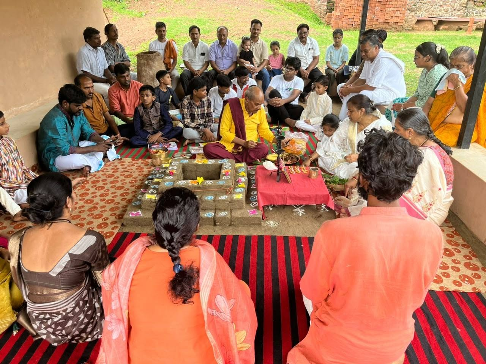

The program began with the worship of Goddess Saraswati, followed by a Havan and the Vidyarambha sanskaara for the admitted children.
कार्यक्रम की शुरुआत माँ सरस्वती के पूजन से हुई, इसके बाद हवन और प्रवेशित बालकों का विद्यारंभ संस्कार संपन्न हुआ।
Jeevika Ashram · Anaadi Foundation, Palani, Tamil Nadu
जीविका आश्रम · अनादि फाउंडेशन, पलानी, तमिलनाडु
A residential gurukul bringing the rishis' knowledge to a new generation — launched jointly by Jeevika Ashram and Anaadi Foundation on 5 August 2026.
ऋषियों के ज्ञान को नई पीढ़ी तक पहुँचाने वाला एक आवासीय गुरुकुल — जीविका आश्रम और अनादि फाउंडेशन द्वारा संयुक्त रूप से 5 अगस्त 2026 को आरंभ।
With the blessings of the Gurus, Jeevika Ashram and Anaadi Foundation (Palani, Tamil Nadu) inaugurated a residential Dharma Gurukulam on Wednesday, 5 August 2026 — Saptami Tithi of Shravan month — in a serene atmosphere. The Gurukul is established within the premises of Jeevika Ashram, in Indrana village, Jabalpur district, Madhya Pradesh.
गुरुओं के आशीर्वाद से, जीविका आश्रम और अनादि फाउंडेशन (पलानी, तमिलनाडु) ने बुधवार, 5 अगस्त 2026 — श्रावण मास की सप्तमी तिथि — को एक शांत वातावरण में आवासीय धर्म गुरुकुलम का शुभारंभ किया। यह गुरुकुल जीविका आश्रम के परिसर में, इंद्राना गाँव, जबलपुर ज़िला, मध्य प्रदेश में स्थापित है।

The program began with the worship of Goddess Saraswati, followed by a Havan and the Vidyarambha sanskaara for the admitted children.
कार्यक्रम की शुरुआत माँ सरस्वती के पूजन से हुई, इसके बाद हवन और प्रवेशित बालकों का विद्यारंभ संस्कार संपन्न हुआ।
The children, their parents, and all other attendees then visited the Barra Dham Hanuman Temple near the premises and sought the blessings of the revered ascetic saint, Shri Maheshanand Maharaj Ji, who resides within the same complex.
इसके बाद बच्चों, उनके अभिभावकों और अन्य सभी उपस्थित जनों ने परिसर के निकट स्थित बर्रा धाम हनुमान मंदिर के दर्शन किए और वहीं निवासरत परम पूज्य संत श्री महेशानंद महाराज जी का आशीर्वाद प्राप्त किया।
The problems facing today's education system are familiar to all of us. Working toward solutions, Anaadi Foundation is actively engaged in establishing its own distinct kind of gurukuls across the country.
आज की शिक्षा व्यवस्था की समस्याओं से हम सभी परिचित हैं। इन्हीं समस्याओं का समाधान खोजने की दिशा में, अनादि फाउंडेशन देश भर में अपनी तरह के अलग गुरुकुल स्थापित करने में सक्रिय रूप से जुटा है।
This combined effort of Jeevika Ashram and Anaadi Foundation is a step toward bringing the knowledge of the rishis — practiced in Bharat since ancient times and still alive in villages today — to people, for loka sangraha.
जीविका आश्रम और अनादि फाउंडेशन का यह साझा प्रयास भारत में सदियों से चले आ रहे ऋषियों के उस ज्ञान को, जो लोक संग्रह के लिए गाँवों में आज भी इस्तेमाल किया जा रहा है, लोगों तक पहुँचाने की दिशा में एक कदम है।
Vidyarthis will go through a curriculum rooted in local knowledge to solve the problems of the future in dimensions of ecology, health, leadership, and more. The curriculum is a blend of Sanskrit, Hindi, Bharatiya Vijnana, Ganita, and various skills that make life and livelihood fulfilling.
विद्यार्थी प्रकृति-पारिस्थितिकी, स्वास्थ्य, नेतृत्व, आदि जैसे भविष्य की समस्याओं को हल करने के लिए स्थानीय ज्ञान पर आधारित पाठ्यक्रम से गुजरेंगे। पाठ्यक्रम में संस्कृत, हिंदी, भारतीय विज्ञान, गणित और अलग-अलग कला-कारीगरियों का मिश्रण है, जो जीवन, जीवनशैली और आजीविका को एक साथ साधकर आगे बढ़ता है।
Eight children — from Anuppur, Hyderabad, Vijayawada, Visakhapatnam, and Jabalpur — were enrolled in the residential Gurukul when it commenced on 5 August 2026.
5 अगस्त 2026 को जब यह आवासीय गुरुकुल आरंभ हुआ, तब अनूपपुर, हैदराबाद, विजयवाड़ा, विशाखापत्तनम और जबलपुर से आठ बच्चे इसमें प्रवेशित हुए।
Admission Enquiriesप्रवेश जिज्ञासाThis Gurukul is completely free for every student — no tuition, no fees, nothing collected from the children or their families.
यह गुरुकुल हर विद्यार्थी के लिए पूर्णतः निःशुल्क है — कोई शुल्क नहीं, कोई फीस नहीं, बच्चों या उनके परिवारों से कुछ भी नहीं लिया जाता।
Free doesn't mean without cost — food, stay, teaching, and the Gurukul's daily running all need support. Since nothing comes from the students, all of it comes from donations and guru-dakshina given by the wider community.
निःशुल्क होने का अर्थ यह नहीं कि इसमें कोई लागत नहीं — भोजन, ठहराव, शिक्षण और गुरुकुल के रोज़मर्रा के संचालन के लिए सहयोग चाहिए। चूँकि विद्यार्थियों से कुछ नहीं लिया जाता, यह सब समाज से मिले दान और गुरु दक्षिणा से ही पूरा होता है।
Support this Gurukul →इस गुरुकुल में सहयोग करें →Admissions for the Dharma Gurukulam are handled directly by Anaadi Foundation. For eligibility, the application process, and the next intake, reach out to them.
धर्म गुरुकुलम में प्रवेश की प्रक्रिया सीधे अनादि फाउंडेशन द्वारा संभाली जाती है। पात्रता, आवेदन प्रक्रिया और अगले प्रवेश की जानकारी के लिए उनसे संपर्क करें।
anaadi.org/dharma →anaadi.org/dharma → Questions about Jeevika Ashram's part →जीविका आश्रम की भूमिका पर सवाल →Jeevika Ashram hosts and co-runs the Gurukul on the ground in Jabalpur; Anaadi Foundation manages admissions.
जीविका आश्रम जबलपुर में गुरुकुल का स्थानीय संचालन करता है; प्रवेश अनादि फाउंडेशन द्वारा संभाला जाता है।